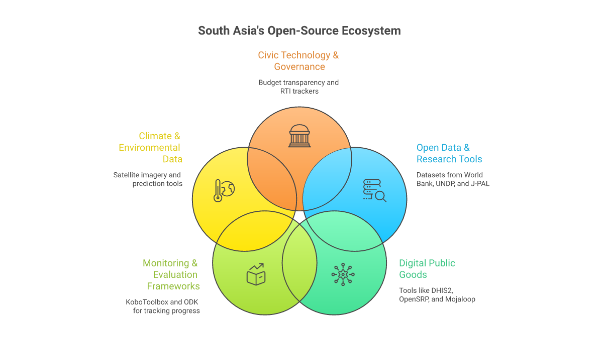
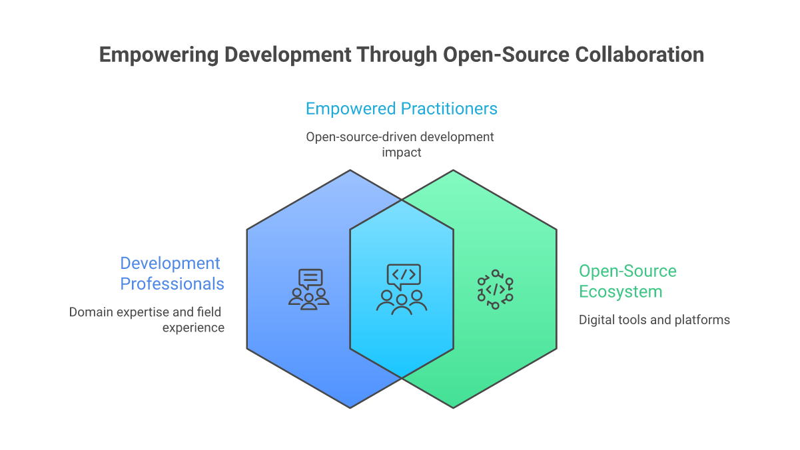

Open Source as Development Infrastructure
When we think about infrastructure for international development, we tend to picture roads, hospitals, and power grids. But there is another kind of infrastructure that is quietly reshaping how development work gets done: the open-source software ecosystem. At the centre of this ecosystem sits GitHub, a platform that hosts over 400 million repositories and serves as the collaborative backbone for millions of developers, researchers, and increasingly, development practitioners.
For organisations working in South Asia, GitHub is no longer just a place where software engineers store code. It has become a platform for sharing research tools, distributing open datasets, collaborating on monitoring frameworks, and building the digital public goods that underpin everything from health systems to climate adaptation. Understanding this ecosystem is not optional for development professionals in 2026 — it is essential.

Five Categories of Open Development Repos
GitHub's development-relevant repositories fall into five broad categories, each serving a distinct function in the practitioner's toolkit.
1. Open Data and Research Tools
Organisations like the World Bank, UNDP, and J-PAL maintain GitHub repositories with open datasets, replication code for impact evaluations, and statistical tools designed for development research. The World Bank's open data repositories alone contain thousands of datasets spanning poverty measurement, health outcomes, education access, and economic indicators across South Asian countries. For a researcher in Dhaka or a programme manager in Colombo, this represents immediate access to data that would have required months of bureaucratic requests a decade ago.
2. Digital Public Goods
The Digital Public Goods Alliance maintains a registry of open-source software, open data, open AI models, and open standards that address the Sustainable Development Goals. Projects like DHIS2 (health information systems used across India and Bangladesh), OpenSRP (smart register platforms for frontline health workers), and Mojaloop (open-source payment infrastructure) are all developed openly on GitHub. These are not side projects — they are production systems serving millions of people.
3. Monitoring, Evaluation, and Learning Frameworks
A growing number of MEL tools are being built and shared as open-source projects. Survey tools like KoboToolbox, data collection platforms like ODK (Open Data Kit), and analysis frameworks for randomised controlled trials are all GitHub-hosted and community-maintained. For development organisations with limited technology budgets, these tools represent sophisticated capabilities at zero licensing cost — provided they have the technical capacity to deploy and maintain them.
4. Climate and Environmental Data
Climate adaptation is one of South Asia's most pressing development challenges, and GitHub hosts an expanding collection of tools for climate data analysis. From satellite imagery processing pipelines to flood prediction models, from air quality monitoring dashboards to crop yield forecasting tools, the open-source climate toolkit is growing rapidly. India's own open-source contributions in this space — including tools for monsoon prediction and water resource management — are increasingly cited in international climate research.
5. Civic Technology and Governance
Civic tech projects that promote transparency, accountability, and citizen engagement are a vibrant corner of the GitHub ecosystem. Budget transparency tools, Right to Information request trackers, and open election data platforms are being built and forked across South Asian democracies. These projects demonstrate how open-source principles — transparency, collaboration, community ownership — align naturally with democratic governance values.
"The most powerful thing about open source in development is not the software itself — it is the culture of collaboration, transparency, and shared ownership that comes with it."
What This Means for South Asian Practitioners
For development professionals in South Asia, the open-source ecosystem on GitHub represents both an opportunity and a challenge. The opportunity is clear: access to world-class tools, datasets, and collaborative networks at minimal cost. A small NGO in rural Odisha can use the same data collection tools as a World Bank research team. A government data analyst in Sri Lanka can build on the same statistical libraries used by leading universities.
The challenge is capacity. Using open-source tools effectively requires technical skills that many development organisations lack. Understanding version control, reading documentation, filing issues, and contributing code are competencies that are rarely taught in development studies programmes. This is precisely the gap that platforms like ImpactMojo aim to bridge — not by turning every development professional into a software engineer, but by building enough technical literacy to navigate and leverage the open-source ecosystem.

ImpactMojo's Own Open-Source Journey
ImpactMojo itself is an open-source project hosted on GitHub. Every game, lab, course template, and data file is publicly available for anyone to inspect, fork, and adapt. We chose this path deliberately because we believe that educational resources for development should be as open as the development data they teach people to analyse.
Our repository is not just code — it is a working example of how a small team can build a comprehensive educational platform using open-source tools and practices. From our static HTML architecture (no frameworks, no build step) to our use of Supabase for backend services, every technical decision is documented and visible. We want other organisations building educational content for the development sector to be able to learn from our approach, avoid our mistakes, and build on our work.
Getting Started with GitHub for Development
- Explore the Digital Public Goods Registry to discover tools relevant to your work
- Star repositories you find useful — it helps the projects gain visibility and helps you bookmark them
- Read the issues on projects you use — they reveal how tools are being used in practice
- Start small: fix a typo in documentation, report a bug, or suggest a feature
- Join discussions — many development-focused repos have active community forums
The Road Ahead
The open development ecosystem on GitHub is still maturing. Discoverability remains a challenge — finding the right tool for a specific development context requires knowledge that is not easily searchable. Documentation quality varies wildly. Many promising projects are maintained by a single developer and risk abandonment. And the dominance of English in code, documentation, and discussion excludes practitioners who work primarily in other languages.
These are solvable problems, and South Asian developers and development professionals are well-positioned to solve them. The region's large and growing developer community, combined with deep domain expertise in development challenges, creates the conditions for meaningful contribution to the open-source ecosystem. What is needed is the bridge between these two worlds — and that is exactly the kind of bridge we are trying to build at ImpactMojo.